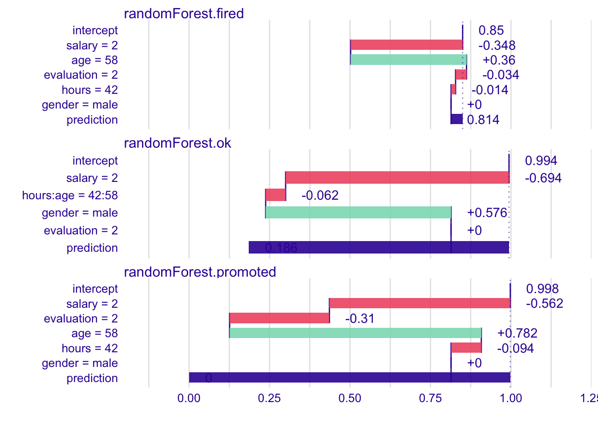

Chapter 11 Feature Importance
Methods presented in this chapter are useful for estimation of feature importance. There are many possible applications of such methods, for example:
- Feature importance may be used for filtering. Features that were not important may be removed from the data before next iteration of model training. Removal of the noise shall lead to a better model.
- Identification of the most important features may be used as a validation of a model against domain knowledge. Just to make sure that it’s not like a single random feature dominates model predictions.
- Identification of the most important features may increase the domain knowledge.
- Comparison of feature importance between different models helps to understand how different models handle particular features.
- Ranking of feature importance helps to decide in what order we shall perform further model exploration, in what order we shall examine particular feature effects.
There are many methods for assessment of feature importance. In general we may divide them into two groups, methods that are model specific and methods that are model agnostic.
Some models like random forest, extreme gradient boosting, linear models and many others have their own ways to assess feature importance. Such method are linked with the particular structure of the model. In terms of linear models such specific measures are linked with normalized regression coefficients of p-values. For tree based ensembles such measures may be based on utilization of particular features in particular trees, see (Paluszynska and Biecek 2017a) or (Foster 2017).
But in this book we are focused on methods that are model agnostic. The may reason for that is
- First, be able to apply this method to any predictive model,
- Second, (which is maybe even more important) to be able to compare methods between models of different structure.
Model agnostic methods cannot assume anything about the model structure and we do not want to refit a model. The method that is presented below is described in details in the (Fisher, Rudin, and Dominici 2018). The main idea is to measure how much the model fit will decrease if a selected feature or group of features will be cancelled out. Here cancellation means perturbations like resampling from empirical distribution of just permutation.
The method can be used to measure importance of single features, pairs or larger subsets. For the simplicity below we describe algorithm for single features, but it is straight forward to use it for larger subsets of features.
11.1 The Algorithm for Model Agnostic Variable Importance Assessment
Let \(\mathcal L(M(X), y)\) be a loss function that calculates goodness of fit of a model predictions calculated for data \(X\) and target \(y\).
- Let \(\mathcal F\) be a set of features, for each feature \(f \in \mathcal F\) do steps 2-5
- Create a new data \(X^{-f}\) with feature \(f\) resampled.
- Calculate model predictions for the new data \(X^{f*}\), they will be denoted as \(M(X^{-f})\).
- Calculate loss function for models predictions on perturbed data \[ L^{-f} = \mathcal L(M(X^{-f}), y) \]
- Feature importance may be calculated as difference or ration of the original loss and loss on perturbed data, i.e. \(fip(f) = L^f - L\) or \(fip(f) = L^f/L\).
Note that ranking of feature importance will be the same for the difference and the ratio since the loss \(L\) is the same.
As we will see below, on diagnostic plot it may be more useful to present loss functions for perturbed data rather than direct feature importance.
11.2 Example: Price prediction
Let’s create a regression model for prediction of apartment prices.
library("DALEX")
library("randomForest")
set.seed(59)
model_rf <- randomForest(m2.price ~ construction.year + surface + floor +
no.rooms + district, data = apartments)A popular loss function for regression model is the root mean square loss \[ L(x, y) = \sqrt{\frac1n \sum_{i=1}^n (x_i - y_i)^2} \]
## [1] 193.8477Let’s calculate feature importance
explainer_rf <- explain(model_rf,
data = apartmentsTest[,2:6], y = apartmentsTest$m2.price)
vip <- variable_importance(explainer_rf,
loss_function = loss_root_mean_square)
vip## variable dropout_loss label
## 1 _full_model_ 285.1355 randomForest
## 2 no.rooms 391.0710 randomForest
## 3 construction.year 410.5866 randomForest
## 4 floor 445.2164 randomForest
## 5 surface 480.1431 randomForest
## 6 district 843.6519 randomForest
## 7 _baseline_ 1081.3710 randomForestOn a diagnostic plot is useful to present feature importance as an interval that start in a loss and ends in a loss of perturbed data.

11.3 More models
Much more can be read from feature importance plots if we compare models of a different structure.
Let’s train three predictive models trained on apartments dataset from the DALEX package. Random Forest model (Breiman et al. 2018) (elastic but biased), Support Vector Machines model (Meyer et al. 2017) (large variance on boundaries) and Linear Model (stable but not very elastic).
Presented examples are for regression (prediction of square meter price), but the CP profiles may be used in the same way for classification.
Let’s fit these three models.
library("DALEX")
model_lm <- lm(m2.price ~ construction.year + surface + floor +
no.rooms + district, data = apartments)
library("randomForest")
set.seed(59)
model_rf <- randomForest(m2.price ~ construction.year + surface + floor +
no.rooms + district, data = apartments)
library("e1071")
model_svm <- svm(m2.price ~ construction.year + surface + floor +
no.rooms + district, data = apartments)For these models we use DALEX explainers created with explain() function. These explainers wrap models, predict functions and validation data.
explainer_lm <- explain(model_lm,
data = apartmentsTest[,2:6], y = apartmentsTest$m2.price)
vip_lm <- variable_importance(explainer_lm,
loss_function = loss_root_mean_square)
vip_lm## variable dropout_loss label
## 1 _full_model_ 282.0062 lm
## 2 construction.year 281.9007 lm
## 3 no.rooms 292.8398 lm
## 4 floor 492.0857 lm
## 5 surface 614.9198 lm
## 6 district 1002.3487 lm
## 7 _baseline_ 1193.6209 lmexplainer_rf <- explain(model_rf,
data = apartmentsTest[,2:6], y = apartmentsTest$m2.price)
vip_rf <- variable_importance(explainer_rf,
loss_function = loss_root_mean_square)
vip_rf## variable dropout_loss label
## 1 _full_model_ 293.2729 randomForest
## 2 no.rooms 389.4526 randomForest
## 3 construction.year 416.1154 randomForest
## 4 floor 453.9195 randomForest
## 5 surface 480.4062 randomForest
## 6 district 867.7050 randomForest
## 7 _baseline_ 1116.2616 randomForestexplainer_svm <- explain(model_svm,
data = apartmentsTest[,2:6], y = apartmentsTest$m2.price)
vip_svm <- variable_importance(explainer_svm,
loss_function = loss_root_mean_square)
vip_svm## variable dropout_loss label
## 1 _full_model_ 157.7938 svm
## 2 no.rooms 221.4595 svm
## 3 construction.year 365.2600 svm
## 4 floor 439.8724 svm
## 5 surface 527.2598 svm
## 6 district 942.8512 svm
## 7 _baseline_ 1203.7571 svmLet’s plot feature importance for all three models on a single plot.
Intervals start in a different values, thus we can read that loss for SVM model is the lowest.
When we compare other features it looks like in all models the district is the most important feature followed by surface and floor.

There is interesting difference between linear model and others in the way how important is the construction.year. For linear model this variable is not importance, while for remaining two models there is some importance.
In the next chapter we will see how this is possible.
References
Paluszynska, Aleksandra, and Przemyslaw Biecek. 2017a. RandomForestExplainer: A Set of Tools to Understand What Is Happening Inside a Random Forest. https://github.com/MI2DataLab/randomForestExplainer.
Foster, David. 2017. XgboostExplainer: An R Package That Makes Xgboost Models Fully Interpretable. https://github.com/AppliedDataSciencePartners/xgboostExplainer/.
Fisher, Aaron, Cynthia Rudin, and Francesca Dominici. 2018. “Model Class Reliance: Variable Importance Measures for Any Machine Learning Model Class, from the ’Rashomon’ Perspective.” Journal of Computational and Graphical Statistics. http://arxiv.org/abs/1801.01489.
Breiman, Leo, Adele Cutler, Andy Liaw, and Matthew Wiener. 2018. RandomForest: Breiman and Cutler’s Random Forests for Classification and Regression. https://CRAN.R-project.org/package=randomForest.
Meyer, David, Evgenia Dimitriadou, Kurt Hornik, Andreas Weingessel, and Friedrich Leisch. 2017. E1071: Misc Functions of the Department of Statistics, Probability Theory Group (Formerly: E1071), Tu Wien. https://CRAN.R-project.org/package=e1071.